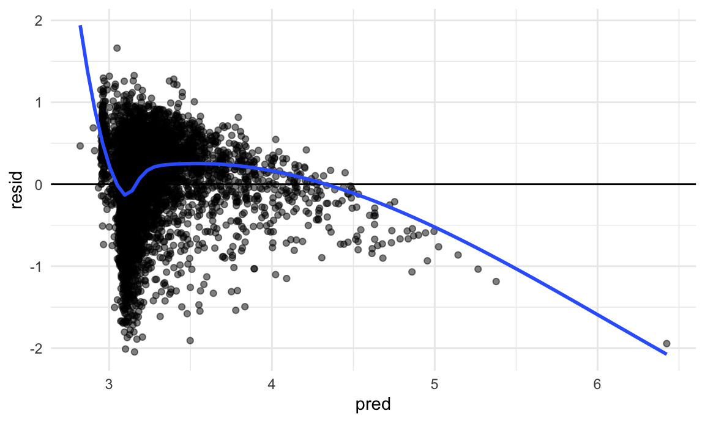
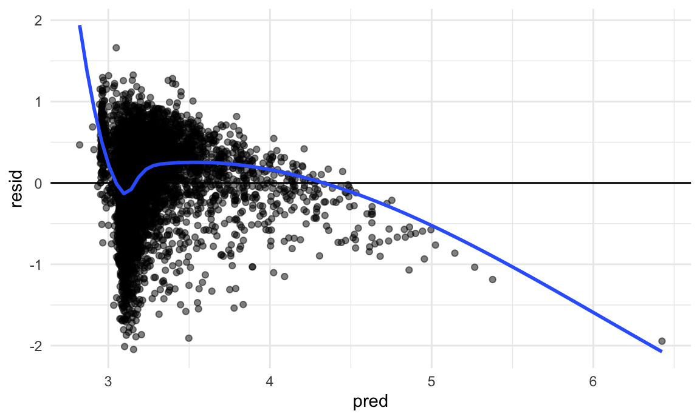
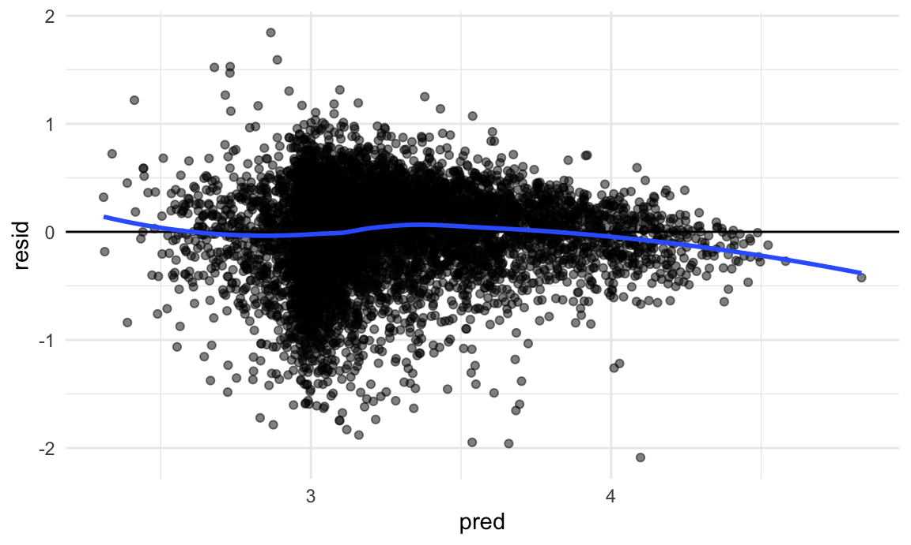

This will include all code for building our model
library(tidyverse)
library(mgcv)
library(modelr)
library(glmnet)
knitr::opts_chunk$set(
fig.width = 6,
fig.asp = .6,
out.width = "90%"
)
theme_set(theme_minimal() + theme(legend.position = "bottom"))
options(
ggplot2.continuous.colour = "viridis",
ggplot2.continuous.fill = "viridis"
)
scale_colour_discrete = scale_colour_viridis_d
scale_fill_discrete = scale_fill_viridis_d
set.seed(1)
model_movie_df = read.csv("data/letterbox_movie_classification_dataset.csv") |>
janitor::clean_names() |>
filter(original_language == "English") |>
select(average_rating, runtime, watches, list_appearances, likes, fans, lowest, medium, highest, total_ratings)fit a lasso model using glmnet
x = model.matrix(average_rating ~ ., model_movie_df) [,-1]
y = model_movie_df |> pull(average_rating)lambda
lambda = 10^(seq(-2, 2.75, 0.1))
lasso_fit =
glmnet(x, y, lambda = lambda)
lasso_cv =
cv.glmnet(x, y, lambda = lambda)
lambda_opt = lasso_cv[["lambda.min"]]
lasso_fit_opt = glmnet(x, y, lambda = lambda_opt)
lasso_fit_opt |>
broom::tidy()## # A tibble: 6 × 5
## term step estimate lambda dev.ratio
## <chr> <dbl> <dbl> <dbl> <dbl>
## 1 (Intercept) 1 2.99 0.01 0.327
## 2 runtime 1 0.00150 0.01 0.327
## 3 list_appearances 1 0.00000539 0.01 0.327
## 4 fans 1 -0.00000135 0.01 0.327
## 5 lowest 1 -0.0000353 0.01 0.327
## 6 highest 1 -0.000000477 0.01 0.327Lasso model chooses the following predictors
Using outside knowledge, we would like to include total number of watches and exclude lowest and highest (number of lowest ratings and number of highest ratings)
linear model
linear_model = lm(average_rating ~ runtime + list_appearances + watches + fans, data = model_movie_df)
model_movie_df |>
add_predictions(linear_model) |>
add_residuals(linear_model) |>
ggplot(aes(x = pred, y = resid)) +
geom_point(alpha = 0.5) +
geom_hline(yintercept = 0) +
geom_smooth(method = "loess", se = FALSE)## `geom_smooth()` using formula = 'y ~ x'
linear_model |> broom::glance()## # A tibble: 1 × 12
## r.squared adj.r.squared sigma statistic p.value df logLik AIC BIC
## <dbl> <dbl> <dbl> <dbl> <dbl> <dbl> <dbl> <dbl> <dbl>
## 1 0.191 0.190 0.471 475. 0 4 -5382. 10776. 10818.
## # ℹ 3 more variables: deviance <dbl>, df.residual <int>, nobs <int>gam model
gam_model = gam(average_rating ~ s(runtime) + s(list_appearances) + s(watches) + s(fans), data = model_movie_df)
model_movie_df |>
add_predictions(gam_model) |>
add_residuals(gam_model) |>
ggplot(aes(x = pred, y = resid)) +
geom_point(alpha = 0.5) +
geom_hline(yintercept = 0) +
geom_smooth(method = "loess", se = FALSE)## `geom_smooth()` using formula = 'y ~ x'
gam_model |>
broom::glance()## # A tibble: 1 × 9
## df logLik AIC BIC deviance df.residual nobs adj.r.squared npar
## <dbl> <dbl> <dbl> <dbl> <dbl> <dbl> <int> <dbl> <int>
## 1 35.9 -4238. 8550. 8808. 1351. 8038. 8074 0.388 37build training and testing tibbles
cv_df =
crossv_mc(model_movie_df, 100)
cv_df =
cv_df |>
mutate(
train = map(train, as_tibble),
test = map(test, as_tibble))
cv_df =
cv_df |>
mutate(
linear_mod = map(train, \(df) lm(average_rating ~ runtime + list_appearances + watches + fans, data = df)),
smooth_mod = map(train, \(df) gam(average_rating ~ s(runtime) + s(list_appearances) + s(watches) + s(fans), data = df))
) |>
mutate(
rmse_linear = map2_dbl(linear_mod, test, \(mod, df) rmse(model = mod, data = df)),
rmse_smooth = map2_dbl(smooth_mod, test, \(mod, df) rmse(model = mod, data = df)))
cv_df |>
select(starts_with("rmse")) |>
pivot_longer(
everything(),
names_to = "model",
values_to = "rmse",
names_prefix = "rmse_") |>
mutate(model = fct_inorder(model)) |>
ggplot(aes(x = model, y = rmse)) + geom_violin()
we want to use a smooth model > a linear model
The optimal model that we think predicts average_rating
is a generalized additive model containing the following predictors:
summary(gam_model)##
## Family: gaussian
## Link function: identity
##
## Formula:
## average_rating ~ s(runtime) + s(list_appearances) + s(watches) +
## s(fans)
##
## Parametric coefficients:
## Estimate Std. Error t value Pr(>|t|)
## (Intercept) 3.210954 0.004562 703.8 <2e-16 ***
## ---
## Signif. codes: 0 '***' 0.001 '**' 0.01 '*' 0.05 '.' 0.1 ' ' 1
##
## Approximate significance of smooth terms:
## edf Ref.df F p-value
## s(runtime) 8.333 8.846 81.89 <2e-16 ***
## s(list_appearances) 8.793 8.988 200.14 <2e-16 ***
## s(watches) 9.000 9.000 186.24 <2e-16 ***
## s(fans) 8.775 8.983 53.77 <2e-16 ***
## ---
## Signif. codes: 0 '***' 0.001 '**' 0.01 '*' 0.05 '.' 0.1 ' ' 1
##
## R-sq.(adj) = 0.388 Deviance explained = 39%
## GCV = 0.16879 Scale est. = 0.16804 n = 8074significant p-value suggests that the non-linear relationship between the predictor and the response is statistically significant
if we want to use a linear model
summary(linear_model)##
## Call:
## lm(formula = average_rating ~ runtime + list_appearances + watches +
## fans, data = model_movie_df)
##
## Residuals:
## Min 1Q Median 3Q Max
## -2.04642 -0.27131 0.07398 0.31200 1.66101
##
## Coefficients:
## Estimate Std. Error t value Pr(>|t|)
## (Intercept) 2.942e+00 1.572e-02 187.172 < 2e-16 ***
## runtime 1.577e-03 1.465e-04 10.762 < 2e-16 ***
## list_appearances 6.758e-06 2.387e-07 28.307 < 2e-16 ***
## watches -4.313e-07 2.617e-08 -16.481 < 2e-16 ***
## fans -2.294e-06 7.741e-07 -2.963 0.00305 **
## ---
## Signif. codes: 0 '***' 0.001 '**' 0.01 '*' 0.05 '.' 0.1 ' ' 1
##
## Residual standard error: 0.4714 on 8069 degrees of freedom
## Multiple R-squared: 0.1906, Adjusted R-squared: 0.1902
## F-statistic: 475.1 on 4 and 8069 DF, p-value: < 2.2e-16